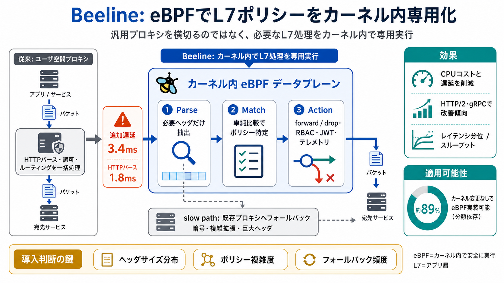

Enforcing Application-Layer Policies in eBPF
Next, we assess the worst-case scenario, where all messages are processed on the slow path. In this case, Beeline redire…

サービスメッシュのL7ポリシー適用を、汎用プロキシではなくカーネル内の専用データプレーンとして実行する発想。
L7ポリシー（HTTPヘッダ監視・ルーティング、認可、JWT検証、RBAC、テレメトリ等）は処理が増えやすく、レイテンシやスループットへ影響しやすい。
Beelineは「プロキシの横を速くする」発想ではなく、「必要なL7処理そのものを、eBPFでカーネル内に専用実行する」点に価値がある。
Envoy追加遅延3.4msのうち、過半を占めるのがHTTPパース（1.8ms）。IPCなど他要因は相対的に小さい（約0.5ms）。
eBPF側は、(i)必要ヘッダだけ選択的抽出、(ii)単純比較で該当ポリシー特定、(iii)実行してforwardまたはdropへ、の流れで処理する。
Parseでは、ポリシーに必要なフィールドだけを抽出し、完全な構文解析を避けることでCPU負荷を下げる。
Actionは、ルーティング、ヘッダ操作、RBAC、JWT検証、テレメトリ収集などを行い、最終的にforwardまたはdropへ進める。
BeelineはeBPFに不向きな処理をslow pathへ回し、既存プロキシへフォールバックできる。段階導入の現実性を保つ設計。
Envoy設定を多数収集しL7ポリシーを分類した結果、約89%は「カーネル変更なしでeBPF実装可能」という主張が提示されている。
DeathStarBench系ワークロードやEcho Service等で、レイテンシ分位とスループットの両面で改善が見られ、特にHTTP/2やgRPCの現実負荷で優位が出たとされる。
slow pathの最悪ケースでは、大きなHTTPヘッダを含むトラフィックでeBPF側のパース負担が効き、効果が相殺され得る。HTTP/2や複雑ポリシーでも制約がある。
BeelineはL4高速化の次として「L7ポリシーの専用カーネル化」を現実に寄せる研究だが、適用率・slow path確率・自組織のポリシー複雑度で勝ち負けが決まる。
Next, we assess the worst-case scenario, where all messages are processed on the slow path. In this case, Beeline redire…
Major Cloud Providers: eBPF network observability restructuring reduced server utilization by 3x Major E-commerce Platf…
eBPF programs attach to kernel subsystems to collect metrics with minimal overhead. They can be configured to emit telem…
``` flowchart TB subgraph "L7 Policy Processing" A[HTTP Request] --> B[eBPF TC Hook] B --> C{L3/L4 Policy Check} C -->…
This article is part of the eBPF Developer Tutorial, and for more detailed content, you can visit here. The source code …